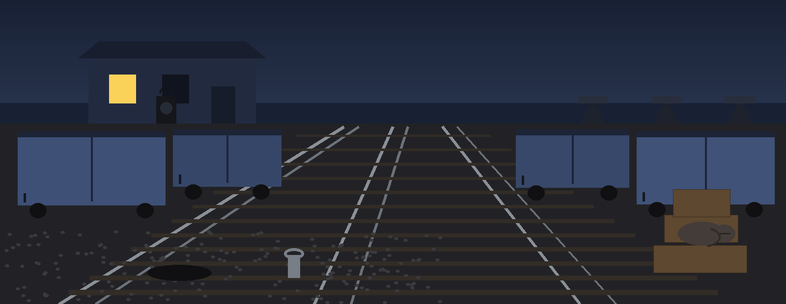
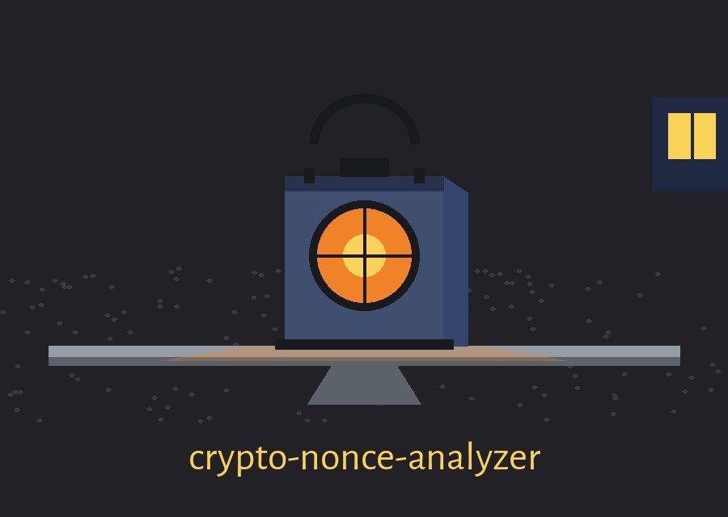
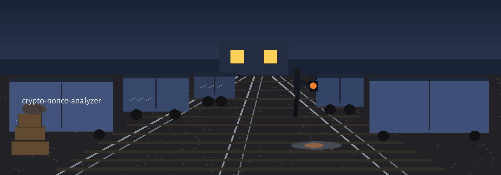
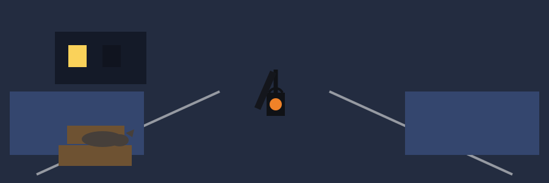

crypto-nonce-analyzer: Night Freight Yard's Lantern Language



Files Received in Order
Two Checks and No Others
Neighbours Only for Steps
Judge the Job by Its Exit
Sheet one: job description
Files received, one or more. Entries per file, one per line. Entry form, hex encoded. Checks available, two. Checks performed, only those the caller flags. The program reads text files of hex encoded nonces, gathers every entry that passes its checks into one combined list in the order the files were named, and then performs either or both of the two checks it offers, exact collision counting and the counting of adjacent entries that rise by exactly one, reporting what it finds either to the screen or to a named output file. It is not a reader of messages, a holder of keys, or a judge of quality in general.
Sheet two: receiving rules
Blank lines are skipped without comment. A line that is not hex at all stops the whole job. A line that is hex but decodes to a length outside the permitted span is skipped with a warning and the job continues. Hex is defined strictly: the line must be non empty, its length must be even, and every character must be a hex digit, upper or lower case. If a file cannot be found or opened, the job stops. If every entry in every file is filtered out by length, the job stops with a warning that no valid entries remain. In each of those cases the ending is exit 1 and no partial tally is issued: a tally drawn from half a rake is worse than no tally.
Sheet three: controls in parser order
The positional file list comes first, one or more files being required. The minimum length control follows, a whole number of bytes, default 8. The maximum length control follows it, a whole number of bytes, default 32. The collision flag follows, a switch with no value, which orders the counting of repeated entries. The incrementing flag follows, a switch with no value, which orders the adjacent step check. The output file control closes the list, an optional path, unset by default, in which case the tally is printed rather than filed. Validation rule: if the minimum is negative, or if the maximum falls below the minimum, the parser itself refuses the combination, and that refusal ends at exit 2.
Sheet four: the collision count
Every entry in the combined list is counted. Entries that occur more than once are reported with their hex form and their number of occurrences, and entries that occur once are not listed. The report heading announces collisions where any exist and announces that none were detected where none exist. Because the list is combined before counting, a repetition that is split across two files counts exactly as a repetition inside one file counts.
Sheet five: the step check
Qualification one: only neighbours are compared, each entry against the entry that follows it in the combined list, so non adjacent rises, however regular, are invisible to this check. Qualification two: the comparison is by whole number value, the second entry counting as a step only where it equals the first plus exactly one, with the pair reported in hex in arrival order. Qualification three: the comparison takes no account of byte length, so an entry of one length can be counted as one less than an entry of a different length that follows it, and a pair can likewise be formed across the boundary between two files, the last entry of one becoming the first member of a pair whose second member opens the next.
Sheet six: endings, tallied by number
Tallied plainly: exit 0, exit 1, exit 2. Exit 0 for a completed job, including a job in which no check was flagged, in which case the tally consists of a single line advising that no analysis options were selected and naming the two flags that would select one. Exit 1 for an unreadable file, for a line that is not valid hex, for a list left empty after length filtering, and for an output file that cannot be written. Exit 2 for argument errors, including the length combination described on sheet three. Where an output file is given and written without fault, the tally goes to that file and a log line records where it went, whereas without one the tally is printed to the screen and nothing is stored.
Sheet seven: installation and licence
The standard library alone is used, no third party package is required and no install step beyond obtaining the files exists, the clone line from the README being reproduced exactly as printed in the preserved record below, correct in its organisation and unflagged. The licence row prints the README words, Licensed under the terms in LICENSE, beside the separate fact that the repository LICENSE file carries the MIT License, its holder line giving a pen name together with a single initial for the remaining name, which this sheet records and does not expand.
The preserved README record
# crypto-nonce-analyzer Analyzes cryptographic nonces from text files (one nonce per line, hex encoded) for exact collisions and for incrementing pairs, which can indicate weak nonce generation. Standard library only; there are no third party dependencies to install. ## Install ```bash git clone https://github.com/ShadowGuard-AI/crypto-nonce-analyzer.git cd crypto-nonce-analyzer ``` ## Usage ```bash python3 main.py nonces.txt --detect-collisions --detect-incrementing python3 main.py a.txt b.txt --detect-collisions --output-file results.txt ``` The exit code is 0 for a completed analysis, 1 when a file cannot be read, a line is not valid hex, no valid nonces remain after length filtering, or the output file cannot be written, and 2 for invalid argument combinations. ## Parameters - `nonces`: Positional, one or more files of hex encoded nonces, one per line. - `--min-length`: Minimum nonce length in bytes to consider (default: 8). - `--max-length`: Maximum nonce length in bytes to consider (default: 32). Nonces outside the range are skipped with a warning. - `--detect-collisions`: Detect and report collisions among nonces. - `--detect-incrementing`: Detect incrementing nonce patterns between consecutive nonces. - `--output-file`: Optional file to write the analysis results to. ## License Licensed under the terms in LICENSE.